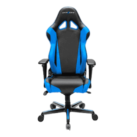
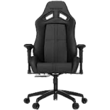
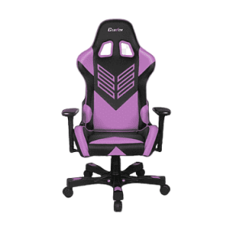
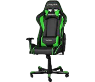

GameMania A gaming chair is a type of chair marketed towards gamers.[1][2] They differ from most office chairs in having high backrest designed to support the upper back and shoulders.[3] Like many office chairs, they are customizable: the armrests, back, lumbar support and headrest can all be adjusted for comfort and efficiency.[3] However, there are criticisms of gaming chairs. For example, they tend to be designed and marketed primarily for aesthetics at the expense of having worse ergonomics than modern office chairs




he first ergonomic gaming chairs were produced by DXRacer around 2006, a company that was originally known for producing high-end seats for luxury cars. However, the company began to experience difficulties with Chrysler discontinuing multiple lines of cars, leading to DXRacer repurposing their stockpile of bucket seats into standalone chairs, marketed towards gamers.[5] In 2008, more companies began to produce gaming chairs.[1]
The gaming chair market grew rapidly in 2011 with the advent of the live-streaming platform Twitch and the popularization of esports.[1] Within the Twitch community, it became common knowledge that having a gaming chair labeled streamers to be a legitimate and respectable gamer.[1]
There are three main types of gaming chairs. These include PC, platform, and hybrid gaming chairs.
PC gaming chairs
PC gaming chairs are the most popular and well-known. They resemble office chairs, but include a headrest, lumbar support (usually in the form of a cushion), as well as adjustable armrests.
Platform gaming
Console gamers often choose platform gaming chairs for their comfort and design, which are suited for playing in front of a TV. This is because they are meant to rest on the floor and are efficient for television gaming. These chairs normally resemble recliner chairs.
Hybrid gaming chairs
Lastly, hybrid gaming chairs share characteristics of both PC and platform gaming chairs. They are often mounted on a swivel base, but still include the shape and style of a platform chair.[6]
Video